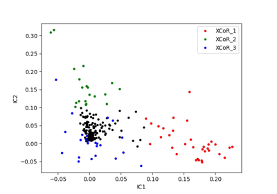
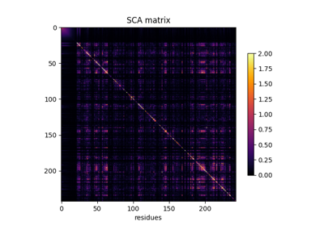

Cocoatree quick start¶
In this section, you’ll find examples to perform basic coevolution
analyses using cocoatree

A minimal SCA analysis

Mapping original MSA, filtered MSA, PDB, and sectors
Mapping original MSA, filtered MSA, PDB, and sectors

Perform a minimal SCA analysis and plot SCA-related heatmaps
Perform a minimal SCA analysis and plot SCA-related heatmaps